Mojej žene Dianke❤️ Milá moja Dianka, ak toto čítaš presne na Valentína, tak sa mi podaril obrovský úspech, pretože nielen že som to stihol všetko naprogramovať, no hlavne že ťa mám stále po svojom boku. Je to už druhý Valentín, čo sme spolu a ja by som nechcel oslavovať tento deň už so žiadnou inou ženou okrem teba. Chcem, aby si vedela, že aj napriek rôznym nezhodám a ťažším časom, ktorými sme si za posledný rok prešli, ťa MILUJEM stále viac a viac. Keďže sa venujem v poslednej dobe programovaniu, tak by som chcel svoju tvorivosť ukázať práve tebe a dúfam, že sa ti bude takýto netradičný darček páčiť.❤️
kubiadia Krásny deň na výlete! #nature #trip
V tomto darčeku ti síce pravdepodobne neukážem a nepoviem nič nové, ale je to niečo ako pamätník s prvkami plánovania. Dianka moja, ani si nevieš predstaviť, aká unikátna pre mňa si. Dúfam, že tento darček bude mať pre teba aspoň z polovice takú unikátnosť, akú máš ty v mojich očiach. Práca na takomto prekvapení ma veľmi bavila, pretože ma hnala dopredu tvoja neopísateľná krása, ktorú som mohol vďaka tomuto projektu očosi častejšie videť❤️. Nad týmto textom si si určite všimla náš spoločný účet, ktorý nás dosť charakterizuje. Viem, že sme v lete mali nespočetne veľa krásnych spomienok a na tej fotke je jedna z nich. Presne od toho dátumu, čo vidíš vľavo sa neviem vyďakovať za to, aké šťastie mám, že ťa mám. A že si ma priviedla bližšie k Bohu, čo je to najcennejšie, čo si mi mohla dať. Dolu som nám spravil galériu, o ktorej ti poviem v ďalšom odseku, no dúfam že sa ti bude páčiť.
Spoločná galéria
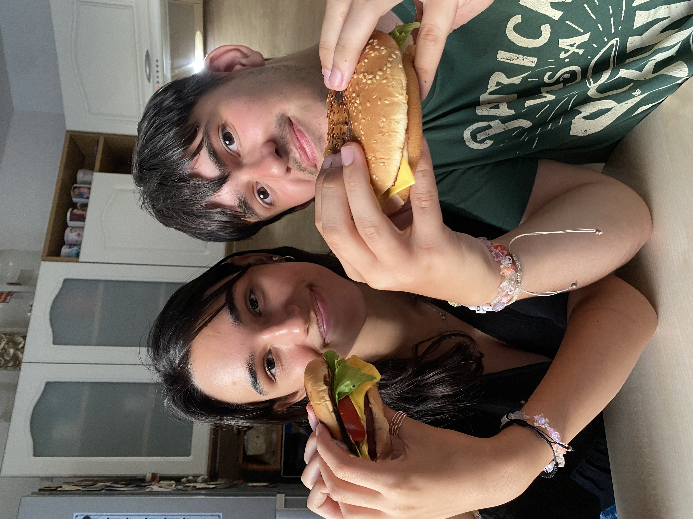
Prvýkrát som u vás jedol domáci burger
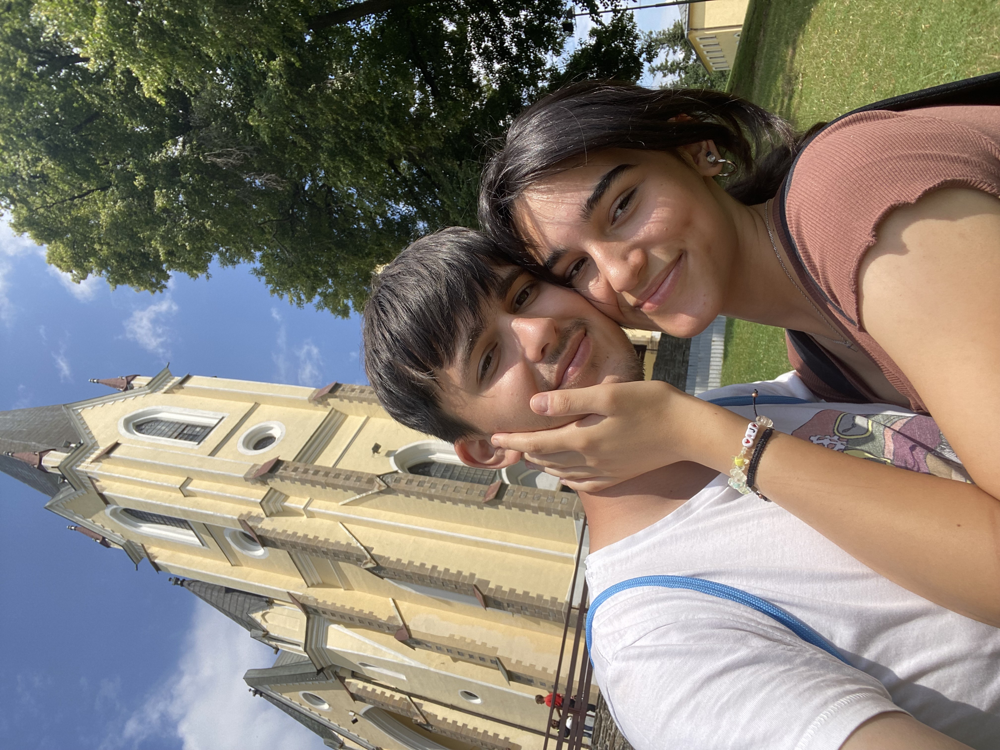
Tu sme boli na našej prvej púti
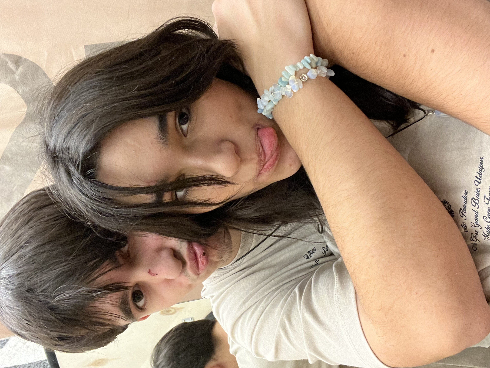
Skúšanie matching oblečenia
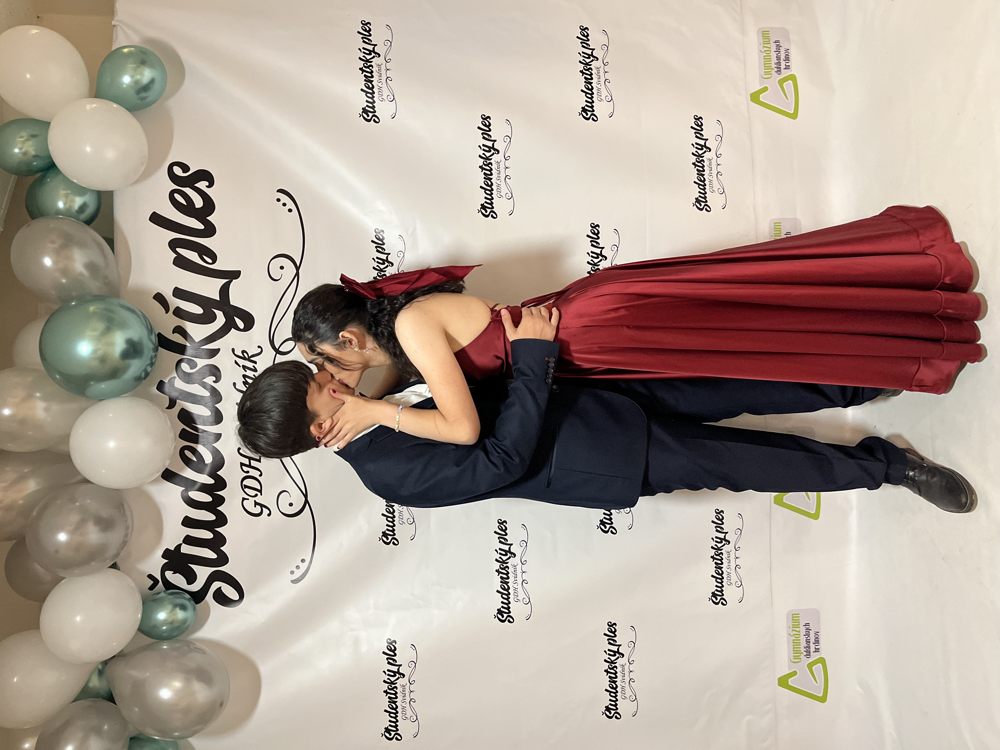
Tu sme boli najkrajší pár na plese
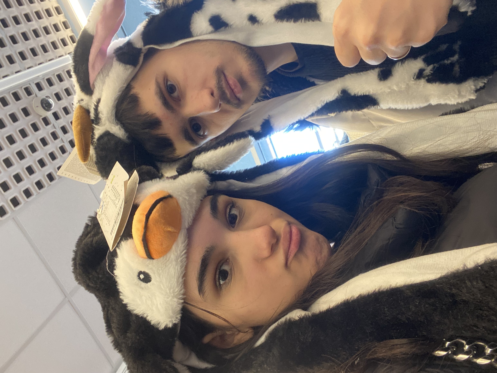
Skúšanie čiapok v Kiku
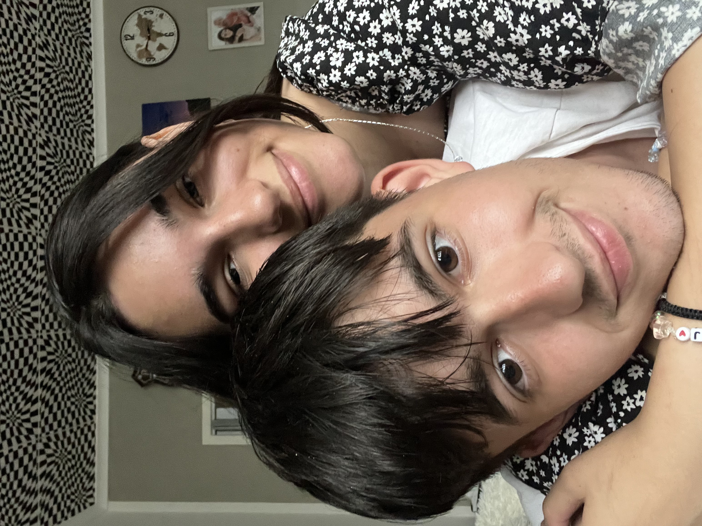
Fotenie u tvojho otca
Keďže si to najúžasnejšie, najlepšie, najvtipnejšie a hlavne najkrajšie dievča na svete, musel som ti tu spraviť galériu s našimi fotkami. Ku každej fotke sa viaže nejaká úžasná spomienka a keby mám pridať fotku ku každej úžasnej spomienke s tebou, tak by som tu musel dať všetky naše spomienky. Na každej fotke vyzeráme obaja neskutočne šťastní a dúfam, že ťa stále budem robiť takou šťastnou, aká si na týchto fotkach, pretože ti chcem oplatiť to šťastie, ktoré mi ty dávaš a chcem ti len dať to, čo si zaslúžiš (čiže všetko na celom svete). Ďakujem ti za všetky tie fotky, ktoré ma nútiš robiť, pretože vždy, keď sa pozriem čo len na jedinú z nich a vidím, akí sme tam šťastní a aká si nádherná, tak ma vždy naplní radosť z toho, že ťa mám.
Takéto počítadlo som tu dal kvôli tomu, pretože rada počítaš, kedy sa čo udialo. Za ten čas, ktorý tam ukazuje, sa toho stalo veľa. Viem, že to máš so mnou veľakrát ťažké a že ešte stále máme na čom pracovať. No zároveň vidno ten posun, kam sme sa dostali a ako si stále rozumieme viac a viac. Verím, že budúci Valentín sa posunieme ešte ďalej. Že si budeme bližší a že si budeme rozumieť viac ako kedykoľvek predtým.
Tajná správa pre Dianku
Gratulujem, dostala si sa na koniec stránky. Chcem ti len povedať, že aj keď máš o sebe pochybnosti, som tu stále pre teba. Ďakujem ti naozaj za všetko, pretože lepšiu priateľku ani nie je možné mať. Vždy, keď ťa vidím alebo počujem, znovu sa zamilujem.
Odomkni
Láska, chcem s tebou stráviť zvyšok môjho života a veľmi ťa milujem.
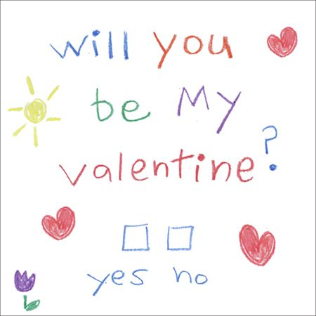
Naša časová os
Prvé stretnutie ❤️
1. september 2023
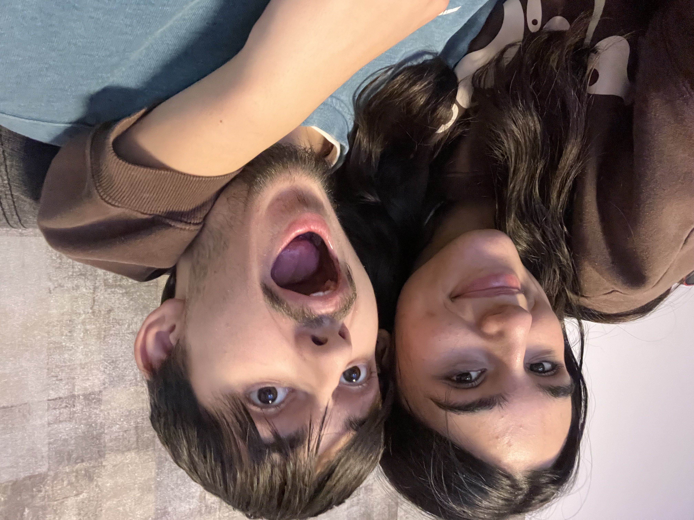
Naše prvé stretnutie v škole. Posielala si mi fotky z výletu.
Prvý výlet 🌄
21. október 2023
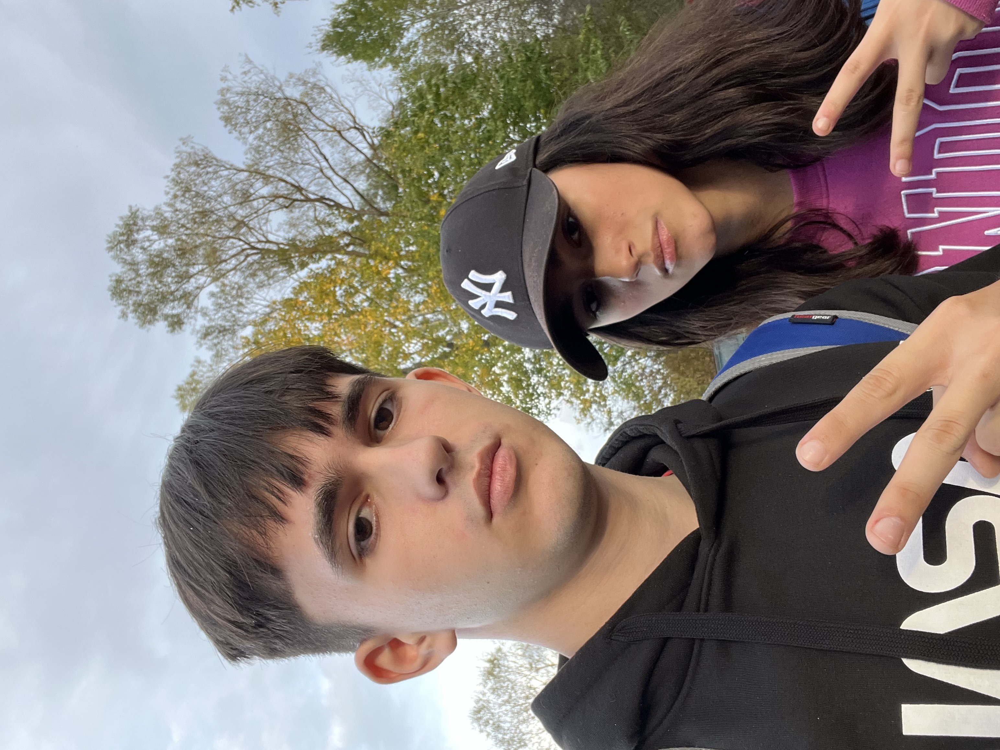
Výlet do Tatier. Bolo to úžasné, plné smiechu a nových zážitkov.
Spoločné Vianoce 🎄
24. december 2023
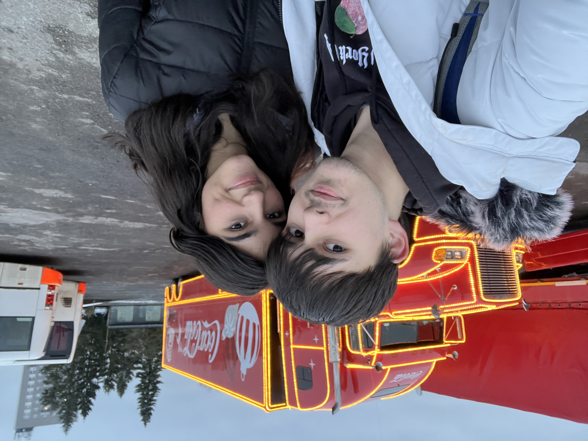
Prvé Vianoce spolu. Hoci sme boli spolu len na 5 minút, bolo to úžasné.
Prvé výročie 🥂
24. november 2024
Oslava nášho prvého výročia. Spomienky na krásne časy a super torta.
Svadba 💍
8. júl 2028
Ten deň, keď sa staneme manželmi. Už sa neviem dočkať.
Budúcnosť 🌟
9. júl 2028 - a X rokov
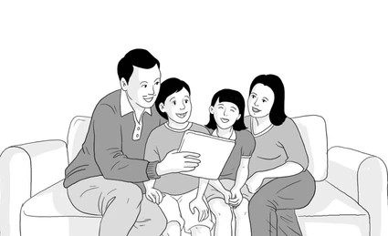
Plány na budúcnosť. Cestovanie, spoločné sny a veľa lásky.
Táto časová os nesymbolizuje len to, čo sme zažili, ale aj to, čo chceme zažiť. Urobil som to tak preto, lebo ti chcem ukázať, že ti ďakujem za to, čo sme už zažili, no zároveň chcem mať s tebou aj spoločnú budúcnosť. Na budúcnosť s tebou sa veľmi teším, pretože si osoba, pri ktorej sa cítim najlepšie aj najkomfortnejšie. Zároveň ti chcem povedať, že aj keď máme krásnu minulosť a pravdepodobne nás čaká krásna budúcnosť, chcem si s tebou užívať hlavne prítomný moment. Prítomny práve preto, lebo vtedy najviac vnímaš tú lásku, ten pokoj, tú radosť, keď sme spolu. A prežívať takéto krásne pocity sa dajú len vtedy, keď sa človek sústreďuje na daný moment.
 kubiadia
kubiadia